TOON 2 trial · for review 2026-11-04, left = published look (TOON 1), right = upgrade (TOON 2)
Learned from the animated-shorts study (research/animated-shorts-gap.md): thick-thin outline (thin top-left, thicker on the shadow side), soft crescent shading with a cool shade, blinks, a lean-and-bob groove, lens blur behind push-ins, a blurred foreground flower frame, and a warm/cool grade. All calm: no cuts, no flashes. Opt-in with TOON = 2; after the cast include.
Trial clip not rendered yet (the heavy lock is reserved for production renders). Render it with hyperframes render --start 8 --end 18 in upgrade-76/. The published look for the same span: before-toon1-8-18s.mp4. Speed test clips (2 s): _speed/t1/out.mp4 (TOON 1), _speed/t2/out.mp4 (TOON 2).
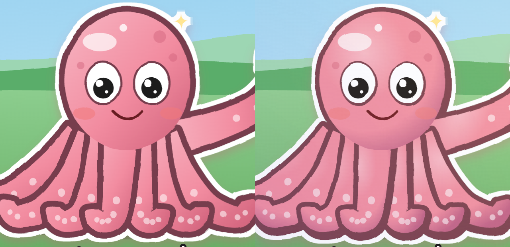
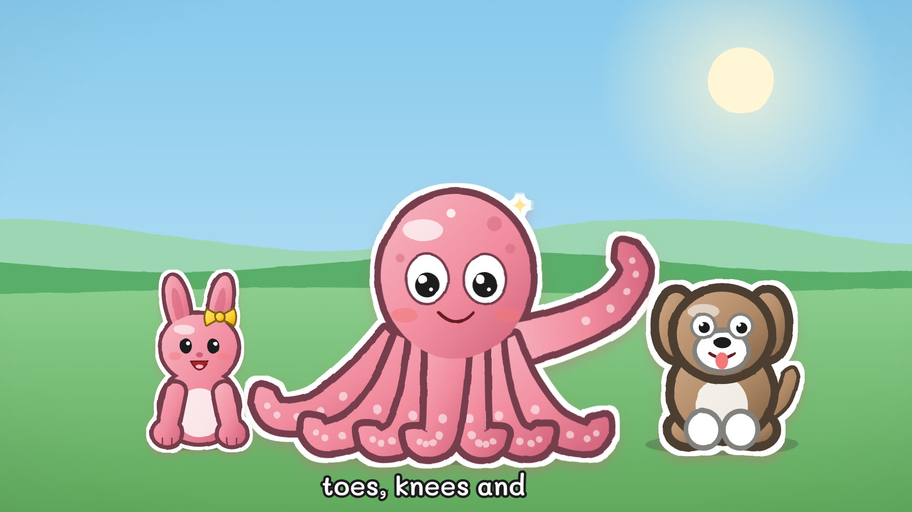
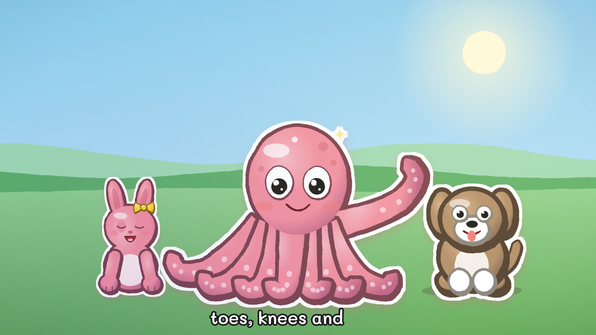
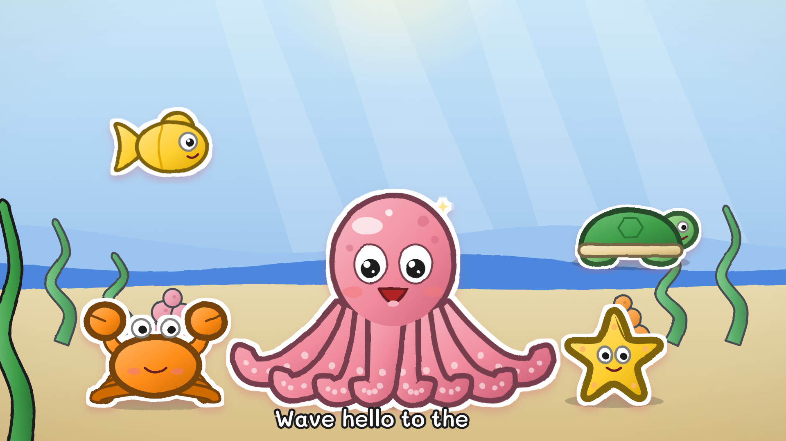
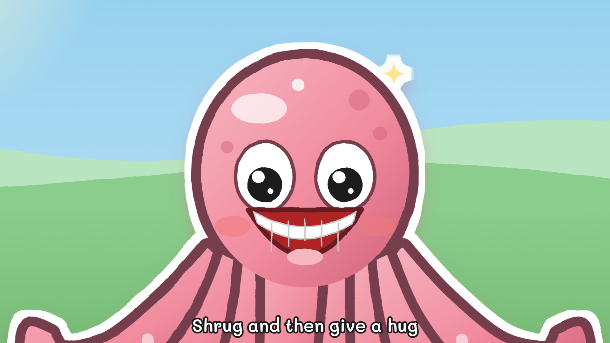
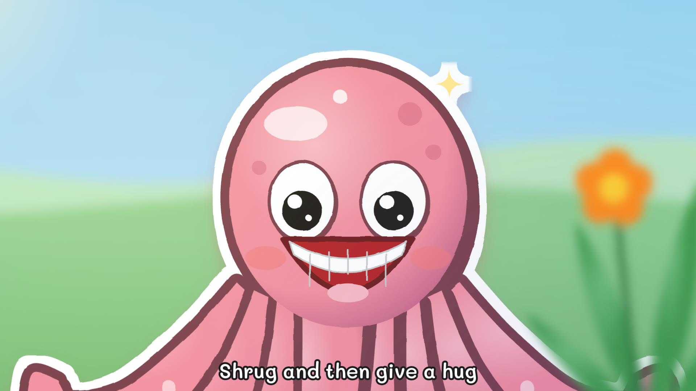
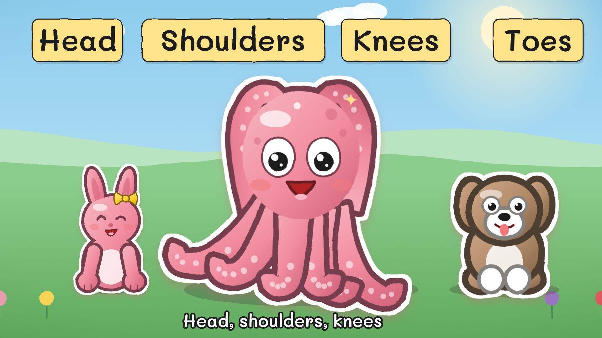
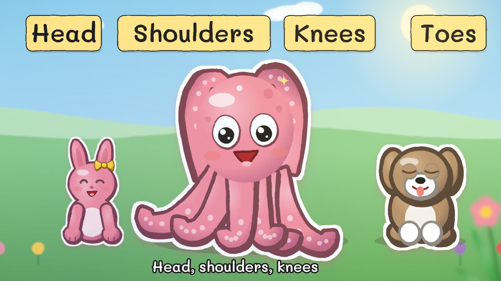
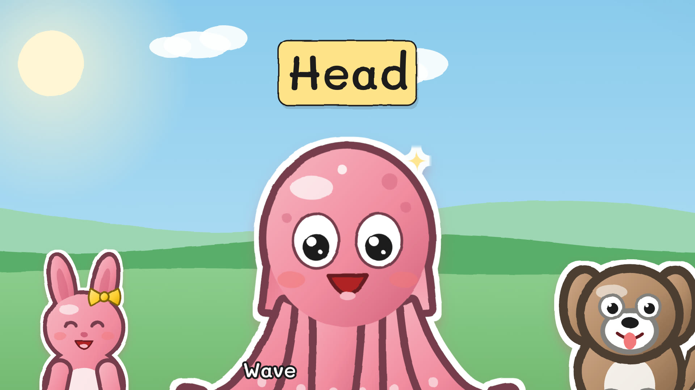
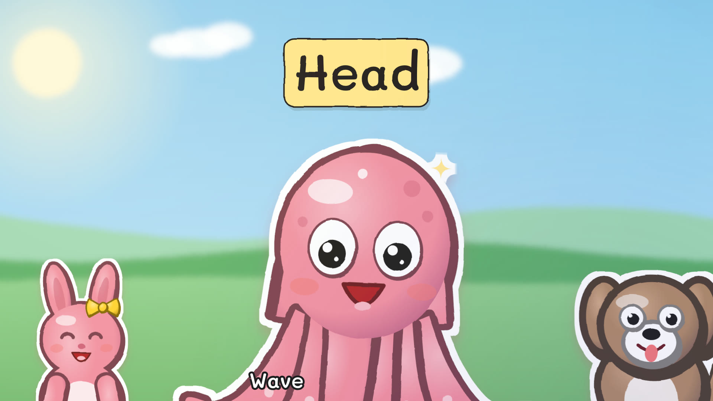
A + D · chosen real video frames, London Bridge rebuilt with the new cast.js
Rose outline under the fill (tentacles grow out of the head, no black lines across them), white sticker edge + soft shadow, gloss + sparkle, white suckers, chubby crab legs. Video: london-bridge-new-style-1080p.mp4 (appears when the render finishes).
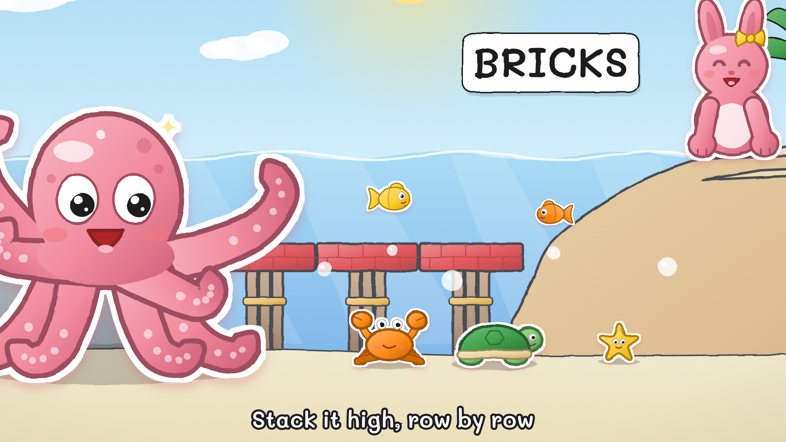
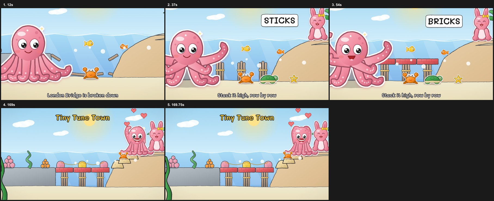
Now current look, for comparison
Separate head circle, 8 long thin tentacles each with their own black outline, black ink lines.

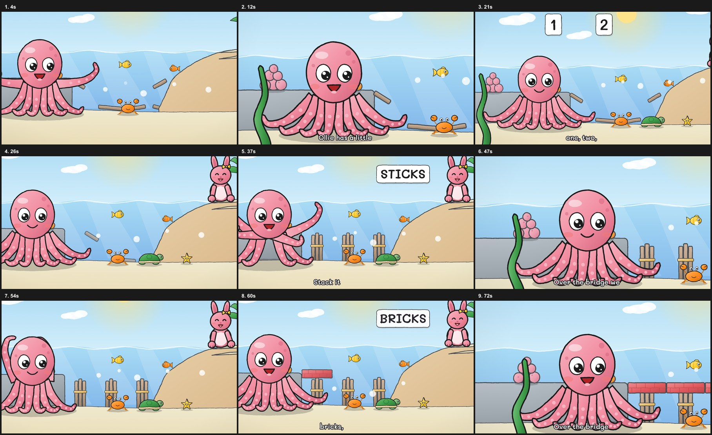